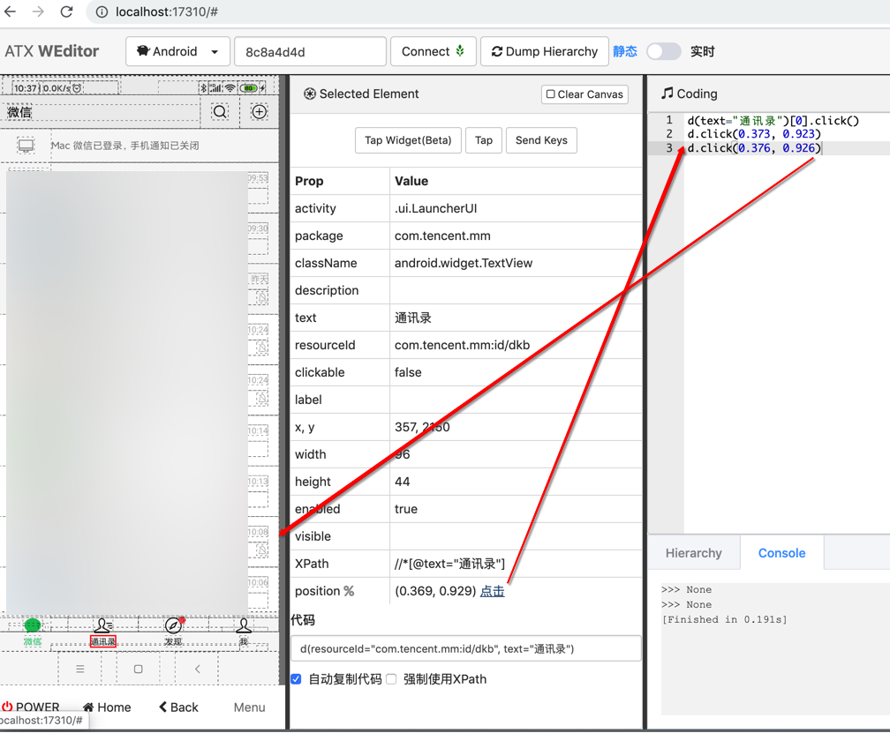
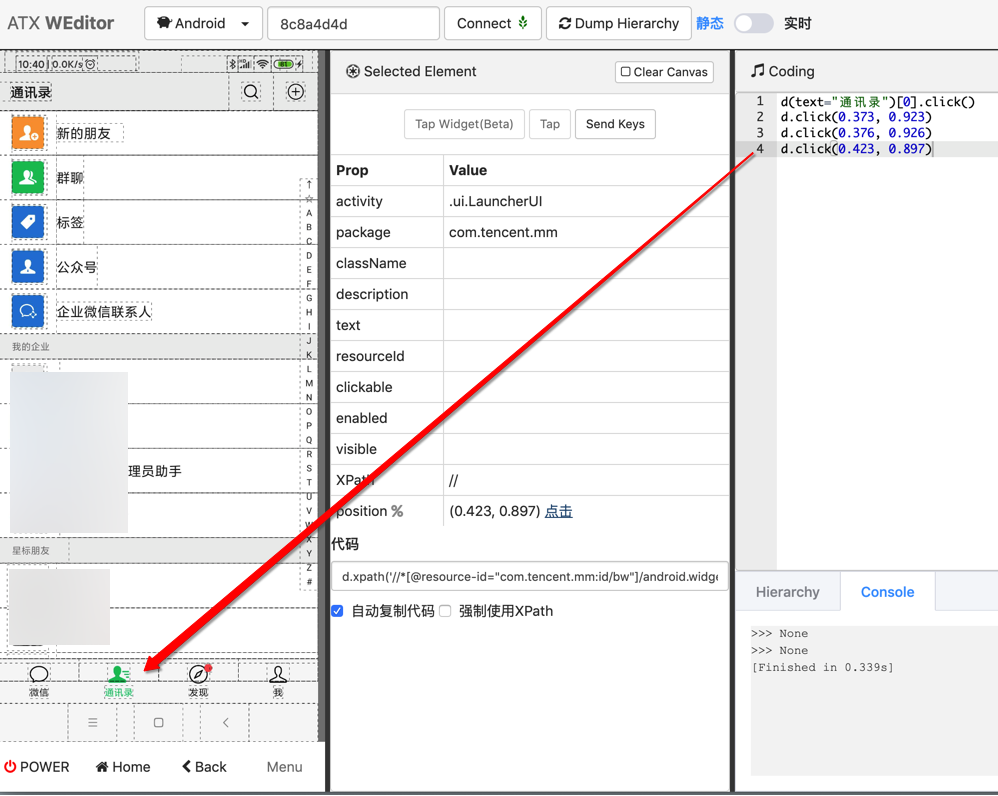

weditor
折腾u2期间，少不了要调试设备当前的页面，以及希望了解其中的元素和细节。
这时候，同一个作者开发的，用于辅助u2的weditor，就可以派上用场了。
- 主页
安装
pip install -U weditor
- 如果是用
pipenv，则是：pipenv install weditor - 如果是已安装过，要升级到最新版，则是：
pip install -U weditor
启动
weditor
- 注
- 旧启动方式是：
python -m weditor - Mac中第一次启动
Python时，可能会遇到申请使用网络的权限提示，注意要点击允许
- 旧启动方式是：
会自动调用浏览器并打开网址：
效果：
使用
概述：
- 连接设备
- 输入 （从adb devices中得到的）安卓设备id
- 点击Connect，看到绿色🚦红绿灯标识，标识连接上了。
- 看安卓设备画面
- 点击 实时，即可看到安卓手机的实时画面。
- 如果只是想要调试页面元素，则可以切换会 静态
- 查看属性
- 点击画面中元素，即可看到属性
- 查看元素结构
- 点击顶部的 Dump Hierarchy，点击右边切换到 Hierarchy，可以看到最新页面的结构
详解：
输入安卓设备的id后，点击Connect连接设备：

用adb devices查看安卓设备的id
注：关于安卓手机的ID=UDID=序列号，可以用adb devices获取到
举例：
~ adb devices
List of devices attached
orga4pmzee4ts47t device
其中的orga4pmzee4ts47t就是安卓设备的id，也成为序列号或UDID
然后 多次在 静态 实时 直接切换几次，最后一次点击 静态，稍等片刻，就能看到页面内容了：

和：

报错可忽略
注意，切换期间偶然会报错：

不用理会，关闭弹框，多试几次即可。
点击Dump Hierarchy后，能查看到页面的结构：
查看元素属性
以及最常用的，点击查看元素属性：
可以拷贝出属性：
Selected Element Clear Canvas
Tap Widget(Beta) Tap Send Keys
Prop Value
activity .ui.LauncherUI
XPathLite //*[@resource-id="com.tencent.mm:id/awv"]/android.widget.RelativeLayout[2]/android.widget.LinearLayout[1]/android.widget.LinearLayout[1]/android.widget.LinearLayout[1]
坐标 % px (0.814, 0.287) 点击
className android.widget.LinearLayout
* index 0
* text
* resourceId
* package com.tencent.mm
* description
* checkable false
* clickable false
* enabled true
* focusable false
* focused false
* scrollable false
* longClickable false
* password false
* selected false
# rect {"x":707,"y":558,"width":203,"height":452} 代码
其中最常用的，可以去定位到元素的一些属性是：
textresourceIddescriptionclickable- 等等
weditor的log：对应内部各种api请求调用
此处对应weditor内部会显示对应的请求的log：

python -m weditor
listening on http://192.168.31.12:17310
[I 210402 22:52:49 web:2246] 200 GET / (::1) 18.51ms
[I 210402 22:52:49 web:2246] 200 GET /cdn.jsdelivr.net/bootstrap/3.3.7/css/bootstrap.min.css (::1) 19.03ms
[I 210402 22:52:49 web:2246] 200 GET /cdn.jsdelivr.net/npm/jstree@3.3.8/dist/themes/default/style.min.css (::1) 33.71ms
[I 210402 22:52:49 web:2246] 200 GET /static/libs/fontawesome/css/font-awesome.min.css (::1) 37.99ms
[I 210402 22:52:49 web:2246] 200 GET /cdn.jsdelivr.net/bootstrap.select/1.12.2/css/bootstrap-select.min.css (::1) 42.20ms
[I 210402 22:52:49 web:2246] 200 GET /unpkg.com/element-ui/lib/theme-chalk/index.css (::1) 52.95ms
[I 210402 22:52:49 web:2246] 200 GET /static/libs/css/buttons.css (::1) 59.13ms
[I 210402 22:52:49 web:2246] 200 GET /static/style.css?v=36c1d231ca96af637a1b43fdeec15aec (::1) 64.98ms
[I 210402 22:52:49 web:2246] 200 GET /cdn.jsdelivr.net/npm/jquery@3.3.1/dist/jquery.min.js (::1) 20.32ms
[I 210402 22:52:50 web:2246] 200 GET /cdn.jsdelivr.net/bootstrap/3.3.7/js/bootstrap.min.js (::1) 81.69ms
[I 210402 22:52:50 web:2246] 200 GET /cdn.jsdelivr.net/bootstrap.select/1.12.2/js/bootstrap-select.min.js (::1) 100.70ms
[I 210402 22:52:50 web:2246] 200 GET /cdn.jsdelivr.net/npm/ace-builds@1.4.12/src-noconflict/ace.min.js (::1) 110.94ms
[I 210402 22:52:50 web:2246] 200 GET /cdn.jsdelivr.net/npm/ace-builds@1.4.12/src-noconflict/mode-python.min.js (::1) 124.62ms
[I 210402 22:52:50 web:2246] 200 GET /cdn.jsdelivr.net/npm/ace-builds@1.4.12/src-noconflict/ext-language_tools.min.js (::1) 135.78ms
[I 210402 22:52:50 web:2246] 200 GET /cdn.jsdelivr.net/npm/ace-builds@1.4.12/src-noconflict/ext-searchbox.min.js (::1) 8.32ms
[I 210402 22:52:50 web:2246] 200 GET /cdn.jsdelivr.net/npm/ace-builds@1.4.12/src-noconflict/theme-monokai.js (::1) 16.38ms
[I 210402 22:52:50 web:2246] 200 GET /cdn.jsdelivr.net/npm/jstree@3.3.8/dist/jstree.min.js (::1) 23.69ms
[I 210402 22:52:50 web:2246] 200 GET /static/libs/vue-2.5.16/vue.js?v=cbe2b9b2fb6955decf033515d079e44b (::1) 31.83ms
[I 210402 22:52:50 web:2246] 200 GET /unpkg.com/element-ui/lib/index.js (::1) 50.16ms
[I 210402 22:52:50 web:2246] 200 GET /static/js/common.js?v=f1c2d6b24d012c4fc2e22595bd549793 (::1) 53.17ms
[I 210402 22:52:50 web:2246] 200 GET /static/js/index.js?v=1e93d9fb27bafdd173d79477b015322e (::1) 5.14ms
[I 210402 22:52:50 web:2246] 200 GET /static/loading.svg (::1) 7.07ms
[I 210402 22:52:50 web:2246] 200 GET /static/running.svg (::1) 13.29ms
[I 210402 22:52:50 web:2246] 200 GET /static/libs/fontawesome/fonts/fontawesome-webfont.woff2?v=4.7.0 (::1) 17.68ms
[I 210402 22:52:50 web:2246] 200 GET /cdn.jsdelivr.net/bootstrap/3.3.7/fonts/glyphicons-halflings-regular.woff2 (::1) 19.46ms
[I 210402 22:52:50 web:2246] 200 GET /api/v1/version (::1) 3.20ms
[I 210402 22:52:50 web:2246] 101 GET /ws/v1/python (::1) 14.49ms
[I 210402 22:52:50 shell:172] create process pid: 15728
[I 210402 22:52:50 web:2246] 200 GET /unpkg.com/element-ui/lib/theme-chalk/fonts/element-icons.woff (::1) 22.82ms
[W 210402 22:52:51 web:2246] 404 GET /apple-touch-icon-precomposed.png (::1) 2.62ms
[W 210402 22:52:51 web:2246] 404 GET /apple-touch-icon.png (::1) 2.38ms
[I 210402 22:52:51 web:2246] 200 GET /favicon.ico (::1) 5.28ms
[I 210402 22:55:37 web:2246] 200 POST /api/v1/connect (::1) 74.36ms
[I 210402 22:56:04 web:2246] 200 POST /api/v1/connect (::1) 26.35ms
[I 210402 22:56:05 web:2246] 200 GET /api/v2/devices/android%3Aorga4pmzee4ts47t/hierarchy (::1) 1126.95ms
[I 210402 22:56:06 web:2246] 200 GET /api/v2/devices/android%3Aorga4pmzee4ts47t/hierarchy (::1) 756.98ms
。。。
[I 210402 22:56:39 web:2246] 200 GET /api/v2/devices/android%3Aorga4pmzee4ts47t/hierarchy (::1) 743.71ms
[I 210402 22:56:39 page:204] Serial: android:orga4pmzee4ts47t
[I 210402 22:56:40 web:2246] 200 GET /api/v1/devices/android%3Aorga4pmzee4ts47t/screenshot (::1) 475.57ms
[I 210402 22:56:41 web:2246] 200 GET /api/v2/devices/android%3Aorga4pmzee4ts47t/hierarchy (::1) 946.91ms
Coding中可以调试代码
之前有用过输入并运行代码，用于调试，效果不错：


再比如：
d(className="android.view.View")
d(className="android.view.View").count
选中第一行后，点击 选中运行：

加上print后
print(d(className="android.view.View"))
print(d(className="android.view.View").count)
不选中，点击 运行按钮，表示全部运行：
可以实时调试，很方便。
详见：
【未解决】自动抓包工具抓包公众号买单吧某个元素通过class+instance定位不到
【已解决】uiautomator2用click点击微信中的通讯录不起作用
Hierarchy支持有限的搜索
对于xml中的节点：
<node NAF="true" index="0" text="" resource-id="com.tencent.mm:id/pq" class="android.view.View" package="com.tencent.mm" content-desc="" checkable="false" checked="false" clickable="true" enabled="true" focusable="true" focused="false" scrollable="false" long-clickable="true" password="false" selected="false" visible-to-user="true" bounds="[156,1522][912,2027]" />
想要去WEditor中
搜id值，即搜com.tencent.mm:id/pq，结果找不到
搜pq，也搜不到
后来发现，只能搜：当前显示出来的内容，即节点的class的类型
比如：android.view.View
是可以搜出并深红色高亮显示的对应节点的
然后才找到此处对应节点：
详见：
【已解决】用weditor实时查看安卓当前页面中的xml源码
【已解决】Mac中安装uiautomator2的UI界面工具：weditor
查看当前的app的包名
举例：
用weditor可以查看到当前的app的包名：
- 小米的 内置浏览器 包名：
com.android.browser - Edge包名：
com.microsoft.emmx - Firefox包名：
org.mozilla.firefox - UC浏览器包名：
com.UCMobile - QQ浏览器包名：
com.tencent.mtt